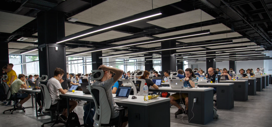
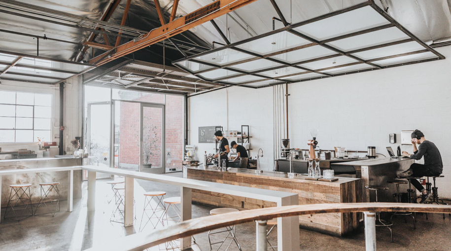

Building a Creative Space — The UX of Instrument Headquarters
27.05.18
We are agents of change
Technology is transforming the world around us. We exist to help organizations look ahead, bringing concepts to life and building systems that shape the future.

At Instrument, we begin client projects by developing a firm understanding of the problem. We start gathering information. We read articles, ask questions, observe, and facilitate workshops. We collect all this data, then generate insights that are actionable. Insights that spark creative solutions to problems.
With this article, I'm taking a look back and uncovering some of the key insights gathered in the process of designing our new office space.
I’ve spent a lot of time designing things, and over the years I’ve become the “make the complex simple” guy. I have an intense drive to hone in on what’s important and cut out everything that isn’t. But anyone I work with will tell you I’m also full of contradictions. I love all the things about design that designers love. Form and function—order, symmetry, simplicity, aesthetic beauty, and usability. I'm drawn to tools that make sense and make life better. Aaaaaaand I'm also drawn to the off-kilter and weird. I love design that feels honest. Human. Design that makes me feel something, even if I'm not sure why.

Somewhere along the path of designing our new office, a co-worker, Steve Denekas and I were talking about how the new space should feel, he (very loudly) said to me, “there is a difference between a creative-looking space and a space that fosters creativity”. He couldn't have been more accurate. In architecture mags or on Pinterest, you see a lot of creative-looking spaces. Spaces with clean lines, colorful furniture, lots of glass, and polished surfaces. Sparse rooms with great little plants and designer staplers are standard finds. These images are like candy to a designer, but looking a bit deeper, I wondered if they were environments that truly propelled creativity or innovation? Steve's realization struck me to the core, directly connecting to the yin and yang of my designer self. The part of me that wants to make things look and feel beautiful and human.
Space is something to think of as an instrument for innovation and collaboration. It’s not something that should be accepted as-is. Space is a valuable tool that can help you create deep and meaningful collaborations in your work and life.
David Kelley, IDEO & D-School Founder
Supporting the creative flow
This initial insight was the spark that I needed to start shaping our vision for the space. I started to envision a place that could be messy and filled with life. A place where nothing is too precious. Where visual texture can trigger an unexpected thought or insight. Where you could bump into someone and regardless of where you are, turn around, grab a pen and start collaborating.
Questions began to surface. How can we create spaces that enable rapid idea generation and easy capture? Spaces that co-workers are compelled to personalize (individually or in groups). How can a space be designed to support our creative flow?